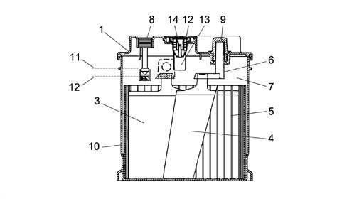
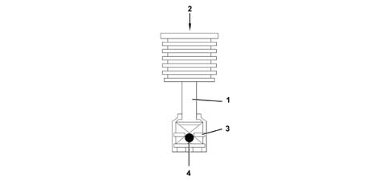
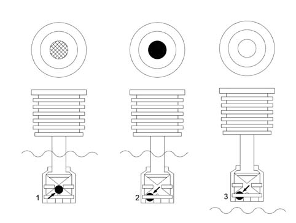

5530B battery and leads
- Path
- Descriptions > 55 ELECTRICAL EQUIPMENT > 5530 CURRENT GENERATOR > 5530B battery and leads
- Kind
- system description
- Applies to
- all engines; all production periods
- Interactive page
- https://sloeber94.github.io/elrnDB-fPnd/en/#/2750963
Applies to: all engines; all production periods
The current generation system consists of:
- the alternator;
- the battery;
- the recharging warning light in the instrument panel;
- the ignition switch for the system connections.
Applies to: all engines; all production periods
BATTERY
The main features of batteries used on new models are the mounting plates made from active materials produced through the calcium lead production technology which has replaced the older antimony- lead type.
This involves a mechanical stretching process for a continuous lead band to reach the final productio of a grille covered in lead oxides for the positive poles and metallic lead only for the negative poles, instead of the use of casting machines to produce grilles for fusion.
The use of a material such as lead-calcium-tin alloy guarantees a considerable reduction in the electrolysis during the operation of the accumulator (dissociation of the water into its components of hydrogen and oxygen) where the gases can escape resulting in reduced evaporation of the actual water with a drastic reduction in the maintenance required for this type of battery.

1 - Cover 2 - Cap edge 3 - Positive plate 4 - Negative plate 5 - Separator 6 - Bridges 7 - Electrolyte 8 - Water gauge 9 - Negative pole 10 - Monobloc 11 - Maximum electrolyte level 12- Minimum electrolyte level 13 - Cap
Applies to: all engines; all production periods
BATTERY
Battery electrical specifications:
- Lead accumulator, low maintenance type.
- Cover: optimised, equipped with holes for adding possible positive terminal cover and fastening elements to the cover by means of a press-on plug ramp (removable) with on plug for each element. Caps with PTFE (polytetrafluoroethylene) membrane for trapping acid vapours System for protection against leaks from outside Centralised gas evacuation with side outlet, with flame arrester
- Cover seal: heat welding.
- Attachment to the base: joined on four sides.
- Poles: lead bushes produced through cold-pressing with sealing labyrinth in the press-work area on the cover.
- Electrolyte level check: through the openings in the caps in the cover, checking the consistency between the indicator (dipstick) and the electrolyte level. The dipstick indicates the max. level allowed, therefore the electrolyte should just come into contact with the lower end of the dipstick. The min. level is reached when the electrolyte exceeds the top end of the separators and/or plates by 10 mm.
- Water gauge for checking min. electrolyte level and battery charge= 70% + /-15%; indicator green - charge status from 55% to 100%; indicator black- battery flat, indicator clear - electrolyte lower than minimum).
- No. of element plates: 4 positive + 3 negative.
- Alloy grille: lead-calcium-tin.
- Plate dize: 144 x 115 mm
- Separator thickness: in polyethylene on negative plate, 1.0 mm thickness
- Plate thickness: positive 1.80 mm; negative 1.70.
- Electrolyte density: 1280 ± 10 g/dm3 at 25° C with battery 100% charged after 2 discharge cycles in 20h.
Electrolyte density at 25° Celsius:
- 1280 g/litre 100 % of charge
- 1240 g/litre 75 % of charge
- 1200 g/litre 50 % of charge
- 1160 g/litre 25 % of charge
- 1120 g/litre drained
- 1110 g/litre totally drained.
Applies to: all engines; all production periods
CONTROL SYSTEM
This battery has an indicator for checking the battery which is a water gauge which makes it possible to qualitatively monitor the level of the electrolyte and the battery charge; this also allows the Customer to initially check the efficiency of the battery. this also allows the Customer to initially check the efficiency of the battery.
This device consists of a transparent plexiglas cylinder: one end contains an indicator fixed to the battery cover; on the other end there is a drip tray, made from an acid-resistant material, drilled in such a way to allow the battery electrolyte to come into contact with a green coloured ball which is housed in the drip tray and can slide along a plane inclined towards the centre of the area of the cylinder.
To sum up, the colour of the indicator reflects the state of the battery charge as set out in the table below.
CONDITION 3 | CONDITION 2 | CONDITION 1 | |
|---|---|---|---|
Information visible | Light, bright colour | Dark colour with green area in the centre | Dark colour with green area in the centre |
Electrolyte level | Below minimum | Correct | Correct |
State of charge | Indeterminate | Battery discharged | from 55% to 100% |
Action to undertake | Top up electrolyte with distilled water | Recharge the battery | No action |
This device:
- does not give readings concerning a possible internal short circuit;
- the density of the electrolyte varies with the temperature;
- a prolonged stop could halt the mixing process of the reagents and thereby lead to a measurement which could refer to the surface layers only.
- if the electrolyte level is low then there are no reliable readings.
To sump up the approximation of the measurement is around 15% (battery charge indicator calibration = 70% ± 15%).
As a result of this reading error, it is necessary to check the battery charge more accurately in a Service Situation.
Applies to: all engines; all production periods
CAP
In low maintenance type batteries with lead-calcium-tin elements the seal is guaranteed by the press-fit caps with an anti-penetration system with a gas evacuation device through the actual caps.
The caps which allow the escape of the gases produced in the battery prevent the leakage of liquid. The cap consists of:
- The cap casing: it acts as to prevent liquids escaping, but allows gas to escape through special openings.
- The labyrinth: it prevents the particles which are released during the operation of the battery from obstructing the special diaphragm.
- The semi-pervious diaphragm: thanks to a special layer of PTFE (poly-tetra-fluoro-ethylene) it prevents the escape of liquid, allowing the gases which are produced during the normal operation of the battery to pass through.
1 - Cap casing 2 - Labyrinth 3 - Diaphragm
Applies to: all engines; all production periods
BATTERY TECHNICAL SPECIFICATIONS
The table summarizes the main battery technical data.
BATTERY | 1.1, 1.2 | 1.3 JTD |
|---|---|---|
VOLTAGE | 12V | 12V |
CAPACITY | 40 Ah | 50 Ah |
INTENSITY | 200 A | 250 A |
Applies to: all engines; all production periods
BATTERY DISCHARGE IN REST CONDITIONS
Correct battery dimensions for model / trim level have been calculated to take into account power uptake when the ignition is switched off.
This absorption should not exceed 0.6 mA for each Ah of battery capacity; this is to ensure that, if the vehicle has been left for one month with all the consumers not controlled by the ignition switched on, residual battery capacity is half of nominal capacity, i.e. enough charge is left to start up the engine under normal environmental temperature conditions.
The table below gives several examples.
Battery | Max. absorption |
|---|---|
32 Ah | 19 mA |
40 Ah | 24 mA |
50 Ah | 30 mA |
60 Ah | 36 mA |
70 Ah | 42 mA |
Applies to: all engines; all production periods
WATER GAUGE
Two types of information are provided;
- electrolyte level;
- battery charge.

1 - Cylinder 2 - Indicator 3 - Drip tray 4 - Ball
Applies to: all engines; all production periods
OPERATING
The operating principle of this device is based on the contact between the drip tray and the battery fluid.
The ball has been designed in such a way that, at a given electrolyte density value, it rises along an inclined plane and reaches the transparent surface of the indicator, colouring the centre of this area green: CONDITION 1.
When the density of the electrolyte decreases (battery run down), the ball moves from the centre and the light is subject to refraction to the extent that the colour in the centre of the indicator darkens: CONDITION 2.
When the fluid no longer bathes the cylinder casing, the ball descends completely and the area in the centre appears even lighter: CONDITION 3.

1 - Condition 1 2 - Condition 2 3 - Condition 3